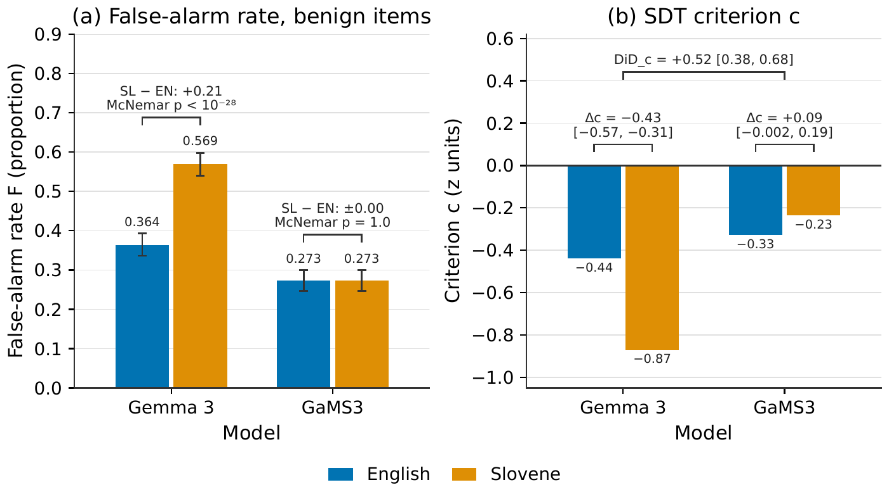
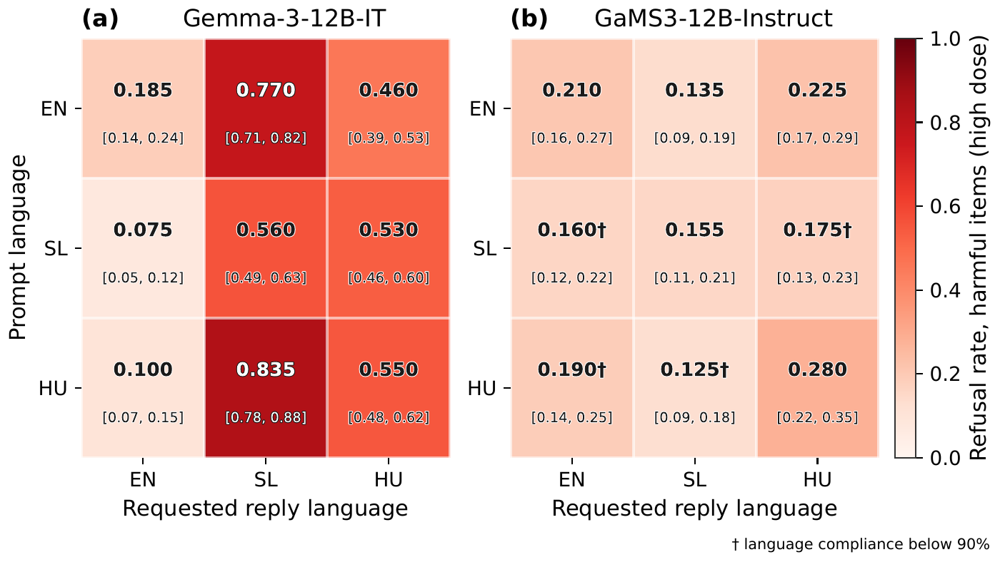
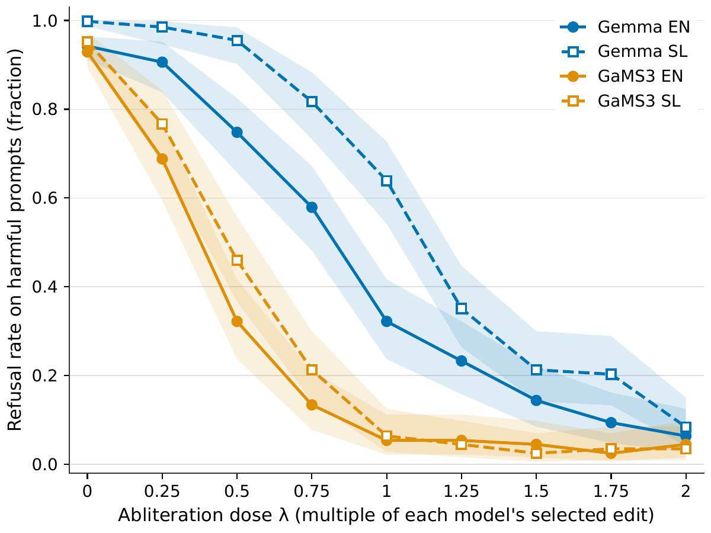

Over-Refusal of Benign Slovene Prompts in Gemma-3-12B Is a Criterion Shift
Safety-aligned language models can appear "safer" in non-English languages simply by refusing more benign requests. This study applies signal-detection theory to Gemma-3-12B-IT and its Slovene-adapted sibling GaMS3-12B-Instruct, and finds that Gemma's higher Slovene refusal rate is a criterion shift: a stricter decision threshold (DiDc = +0.52 [0.38, 0.68]) with no change in the ability to tell harmful from harmless prompts apart. The finding is rated ESTIMATE because its sign reverses under an alternative coding rule.
Contributions
Over-refusal is a criterion shift, not a sensitivity gap
Unedited Gemma false-refuses benign Slovene items at 0.569 vs 0.364 in English, while GaMS3 stays at 0.273 in both languages. Signal-detection decomposition attributes the gap to a criterion shift (DiDc = +0.52 [0.38, 0.68]) with no corresponding change in sensitivity (DiD on d' = -0.003). Rated ESTIMATE: sign reverses under partial-as-refusal coding.
Reply-language refusal follows the output language
A crossed 3x3 design (prompt language x reply language) yields a raw output-language effect for Gemma: edited Gemma refuses more when told to write in Slovene than in English. PPI-corrected estimate on a fresh body: +2.43 [+0.89, +5.38] log-odds. Rated ESTIMATE with a weak anchor (harmful-content adjudicator kappa = 0.12).
Measurement methodology for multilingual refusal
Judge specificity, language compliance, and correction methods interact in ways that change the sign and magnitude of multilingual refusal estimates. No judge in this study exceeds kappa 0.51 on edited text. The readout gate has never passed. All adjudication is author-model LLM, not human.
Method
Two 12-billion-parameter models share the Gemma-3 base but differ in post-training. Gemma-3-12B-IT received Google's standard multilingual post-training. GaMS3-12B-Instruct received Slovene continued pretraining on 140 billion tokens and supervised fine-tuning on a roughly 79% Slovene mix. Both are loaded in NF4 (4-bit) quantization. Code: test sets and supervision audit
Abliteration edit. Per-layer directional ablation via LoRA adapters, optimized by a 40-trial TPE search. The edit objective reduces English refusal while preserving capability on six benchmarks. Two dose levels bracket the 50% English refusal point: low dose (lambda = 0.5 for both models) and high dose (lambda = 1.0 for Gemma, 0.625 for GaMS3).
Over-refusal measurement. Experiment 5 tests 1,093 safe items (XSTest and OR-Bench) and 349 harmful items in English and Slovene. Each item is classified by a local Qwen3-14B judge, calibrated against gemini-2.5-flash on DEV (binary kappa 0.68-0.86). Hit rate, false-alarm rate, d' (sensitivity) and c (criterion) are derived from signal-detection theory. The key contrast is the difference-in-differences DiDc, which isolates the model-by-language interaction on the decision threshold. Code: confirmation on reserved splits
Crossed grid. Experiment 14 crosses three prompt languages (English, Slovene, Hungarian) with three reply languages using a parallel one-line suffix. Each cell contains 200 harmful and 100 benign items at three dose levels. The output-language contrast OUTSL averages the log-odds refusal gap between Slovene-output and English-output cells over prompt languages. Experiment 16 replicates this on a fresh 294-item body with PPI correction as the primary estimator. Cells with language compliance below 90% are excluded from mechanism claims.
Evidence ratings. The study uses three levels. ROBUST: survives all pre-registered checks. ESTIMATE: point estimate is informative but at least one sensitivity check fails. INCONCLUSIVE: confidence interval includes zero or the result is fragile.
Results
Criterion shift (Experiment 5, ESTIMATE)
DiDc = +0.52 [0.38, 0.68]
Gemma's Slovene criterion is shifted by half a standard deviation relative to the GaMS3 baseline. The DiD on d' is -0.003 [-0.33, 0.29], indistinguishable from zero: the asymmetry is in the threshold, not the sensitivity. The sign reverses to -0.31 when partial answers are coded as refusals.
False-alarm rates on benign items
Gemma: 0.569 (SL) vs 0.364 (EN)
Gemma's rate rises from 0.364 to 0.569 in Slovene (McNemar p < 10-28). GaMS3 refuses 0.273 of benign items in both languages (p = 1.0).
Output-language effect, Experiment 14 raw readout
OUTSL = +1.14 [0.60, 1.56] log-odds
Edited Gemma at high dose refuses more when replying in Slovene (0.56-0.83) than in English (0.07-0.18). The cross-model contrast is dOUTSL = -1.58 [-2.22, -0.66]. However, the PPI-corrected output contrast for Gemma is 0.20 [-0.76, 1.13], consistent with zero. Code: prompt vs reply language
Experiment 16 confirmation (PPI-corrected, ESTIMATE)
OUTGemma = +2.43 [+0.89, +5.38]
On a fresh 294-item body, the cross-model difference dOUT = -2.31 [-5.34, -0.68] excludes zero. All confirmation clauses pass on the consensus reference, but the verdict is capped at ESTIMATE because the harmful-content adjudicator kappa is 0.12. Code: C-OUT confirmation
Dose-response: cross-model gap (Experiment 15)
G3 = -0.70 [-1.01, -0.42]
The most powerful estimate from the 13-step dose ladder. The edit-induced component is +0.47 [-0.96, 2.14], whose CI includes zero; whether the cross-model gap is baseline or edit-induced is inconclusive. Code: dense dose ladder
Refusal composition at high dose (Gemma EN-in SL-out)
54% explicit refusal, 26% deflection
Among Gemma's high-dose EN-to-SL harmful-item responses (blind adjudication, n = 50), 54% are explicit refusals and 26% are deflections. The deflection rate difference between EN-out and SL-out is 0.46 [0.23, 0.65], consistent with the relevance curse described by Shen et al. and the output-language effect reported by Addagada. Code: is the reserve real safety?
RefusEU FINAL (Experiment 17, n = 1,300 per cell)
ASR deltas: 0.657 - 0.937 ROBUST
The edit is effective in all four model x language cells. The EN-vs-SL within-model difference is not interpretable as a language effect because the prompt sets are different natural prompts (LaBSE similarity 0.55). Code: RefusEU FINAL
Edited-model criterion shift
DiDc = 0.14 [-0.78, 1.12]
On edited models, the criterion difference is inconclusive: Experiment 11 HARD post-edit DiDc = 0.14 [-0.78, 1.12], whose CI includes zero.
Signal-detection parameters (Experiment 5)
| Gemma EN | Gemma SL | GaMS3 EN | GaMS3 SL | |
|---|---|---|---|---|
| Hit rate (H) | 0.89 | 0.94 | 0.90 | 0.86 |
| False-alarm rate (F) | 0.364 | 0.569 | 0.273 | 0.273 |
| d' | 1.57 | 1.39 | 1.86 | 1.68 |
| c | -0.44 | -0.87 | -0.33 | -0.23 |
1,093 safe + 349 harmful items, Qwen3-14B judge. From Table 1 of the paper.
Refusal rates at high edit dose (Experiment 14)
| EN out | SL out | HU out | |
|---|---|---|---|
| EN in | 0.18 | 0.77 | 0.46 |
| SL in | 0.07 | 0.56 | 0.53 |
| HU in | 0.10 | 0.83 | 0.55 |
| EN out | SL out | HU out | |
|---|---|---|---|
| EN in | 0.21 | 0.14 | 0.23 |
| SL in | 0.16† | 0.15 | 0.17† |
| HU in | 0.19† | 0.12† | 0.28 |
Figures

Figure 1. Criterion shift without sensitivity change. Signal-detection parameters from Experiment 5 on the HARD set (1,093 benign and 349 harmful items; Slovene machine translations vs English back-translations; refusals labelled by a local Qwen3-14B judge, with partial answers coded as non-refusals). Blue bars are English prompts and orange bars are Slovene prompts, for Gemma-3-12B-IT ("Gemma 3") and GaMS3-12B-Instruct ("GaMS3"). (a) False-alarm rate F, the proportion of benign items refused, with Wilson 95% confidence intervals. Brackets give the paired Slovene-English difference and an exact McNemar test on the same items. Gemma's rate rises from 0.364 to 0.569 (p < 10-28), while GaMS3 refuses 0.273 of benign items in both languages (p = 1.0). (b) SDT criterion c in z units, where more negative means a greater tendency to refuse. Lower brackets show the within-model shift (Slovene-English, 95% CI): Gemma moves toward refusing in Slovene (c = -0.87 vs -0.44; delta c = -0.43 [-0.57, -0.31]), while GaMS3 does not (-0.23 vs -0.33; delta c = +0.09 [-0.002, 0.19]). The upper bracket gives the difference-in-differences DiDc = +0.52 [0.38, 0.68]. The corresponding DiD on sensitivity d' (-0.003 [-0.33, 0.29]) is indistinguishable from zero. This finding is rated ESTIMATE: coding partial answers as refusals reverses DiDc to -0.31 [-0.62, -0.09].

Figure 2. Refusal rates in crossed language grid. Refusal rates on harmful items at high edit dose in the 3x3 prompt-language x requested-reply-language grid (Experiment 14, 200 harmful items per cell, primary-judge raw readout). Rows give the prompt language and columns the requested reply language (EN, SL, HU). Colour encodes the refusal rate on a shared white-to-dark-red scale from 0 to 1. Each cell prints the rate with its Wilson 95% CI beneath. (a) Gemma-3-12B-IT: the Slovene-reply column is the most refused (0.560-0.835), the English-reply column the least (0.075-0.185), and the Hungarian-reply column sits in between (0.460-0.550). (b) GaMS3-12B-Instruct: refusal is uniformly low (0.125-0.280) with no reply-language column pattern. Dagger marks cells whose language compliance, pooled over the three dose levels, is below 90%. All four are GaMS3 cells off the English-prompt row (SL-to-EN, SL-to-HU, HU-to-EN, HU-to-SL), so their reply-language labels are unreliable. The Gemma output-language contrast holds on this raw readout, but its PPI-corrected estimate includes zero.

Figure 3. Refusal rate dose-response curves. Refusal rate on harmful prompts as a function of abliteration dose lambda for Gemma-3-12B-IT (blue) and GaMS3-12B-Instruct (amber), in English (solid lines, filled circles; EN-BT arm) and Slovene (dashed lines, hollow squares; item-matched SL-MT arm). Lambda scales each model's own selected abliteration edit (9 steps from 0 to 2; lambda = 1 is the selected edit), so equal lambda does not mean an equal edit across models. Points are J1-judged refusal rates from the Experiment 9 RefusEU-TRAIN probe, with the Hautus correction (k+0.5)/(n+1). Shaded bands are Wilson 95% intervals on the raw proportion. n = 300 harmful items at lambda = 0 and the 100-item core block at every lambda > 0. Gemma's Slovene curve lies to the right of its English curve throughout the transition (0.64 vs 0.32 at lambda = 1): at each dose, more Slovene refusal remains. GaMS3's Slovene curve lies only slightly above its English curve (largest gap 0.14, at lambda = 0.5), and the two meet near the floor from lambda = 1 onward. These per-dose gaps are descriptive. The pre-registered cross-model comparison is made at matched English refusal, not at matched dose.
Limitations
ESTIMATE rating on the primary finding. The criterion-shift DiD reverses sign (-0.31) when partial answers are coded as refusals. The choice of coding rule determines whether over-refusal is attributed to Gemma or is absent. Furthermore, restricting Experiment 5 to the XSTest items alone gives DiDc = 0.10 [-0.13, 0.35], so the effect is carried by the OR-Bench items.
Judge quality. The Qwen3-14B judge was calibrated against gemini-2.5-flash on DEV (kappa 0.68-0.86) but not against human labels. On edited rows across the study, no judge exceeds kappa = 0.51 against blind adjudication. The readout gate has never passed. All adjudication in this study is author-model LLM, not human review.
Sample size. The adjudication sample is 30 items per cell for benign false-refusal rates. The refusal-composition numbers (54% explicit, 26% deflection) come from n = 50 high-dose harmful items.
Language compliance. Four GaMS3 cells fall below 90% compliance (SL-to-EN at 0.00, HU-to-EN at 0.14, SL-to-HU at 0.56, HU-to-SL at 0.86). GaMS3 did not follow the output-language instruction off the English-input row. Mechanism claims for GaMS3 are restricted to the compliant EN-input row.
Quantization. Both models run in NF4 (4-bit) quantization, which may affect refusal behaviour relative to full-precision weights.
Novelty. The observation that over-refusal rates differ across languages is partially anticipated by Addagada (2609.08373) and Nguyen et al. (2608.26186). The present work's contribution is the signal-detection decomposition and the controlled sibling-pair design.